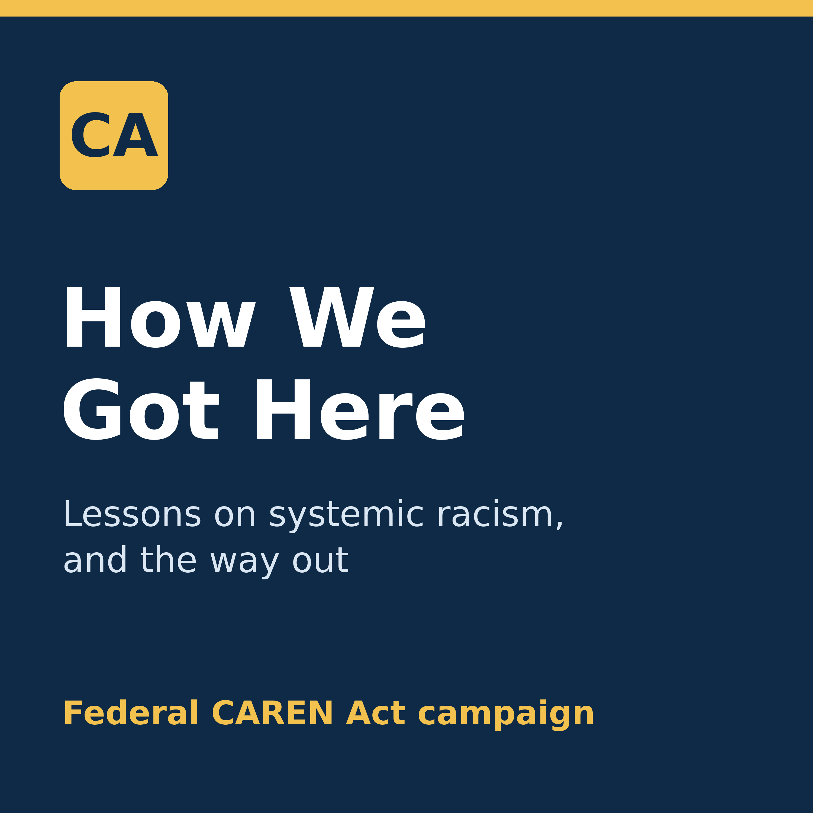

Press kit
Everything a reporter, editor or partner organization needs to cover the Federal CAREN Act campaign: the facts with sources, a press release to adapt, story ideas, and logos.
Media contact
About the campaign
The Federal CAREN Act campaign is a volunteer effort to make it illegal nationwide to call the police on someone in order to discriminate against them. It builds on San Francisco's Caution Against Racial and Exploitative Non-Emergencies (CAREN) Act, passed unanimously in 2020, and similar laws in Oregon, New York and California. The campaign publishes a draft federal bill open to public comment, a map of where discriminatory police calls are likely to cause the most harm, free sourced lessons on the history of systemic racism, and tools for contacting lawmakers. Every claim on the site is sourced, and historical claims are labeled documented, debated, or belief or myth.
Fact sheet
Press release template
Adapt this for a local event, a council resolution, a bill introduction or a report. Replace everything in [brackets], keep it under one page, and send it in the body of an email, not as an attachment.
Story ideas for reporters
- Your county's history. Every county page lists lynchings by name, destroyed communities, redlining, racial covenants and old segregation laws nearby: county.html.
- What “suspicious person” calls lead to. Request your city's 911 call data (template in the toolkit) and compare outcomes; most such calls in San Francisco, Seattle and New Orleans led to no arrest, citation or report (data).
- Laws still on the books. The old laws tracker follows segregation-era text that has never been formally repealed.
- Contested deaths. Hanging deaths of Black Americans ruled suicides that families dispute, with sources: deaths.html.
- People who lived it. First-person accounts on the Stories page (contact us before quoting; we'll ask the author).
- The lawmaker who lived it. Rep. Janelle Bynum wrote Oregon's 2019 law after police were called on her while she canvassed her own district.
Logos and images
Free to use in coverage of the campaign.



Lessons and podcast cover (PNG) One-page policy brief (print to PDF)Every lesson page and county page can also make a share image for social media.